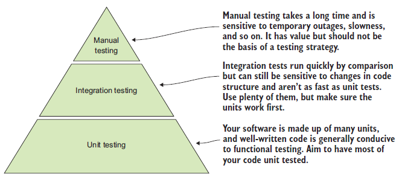
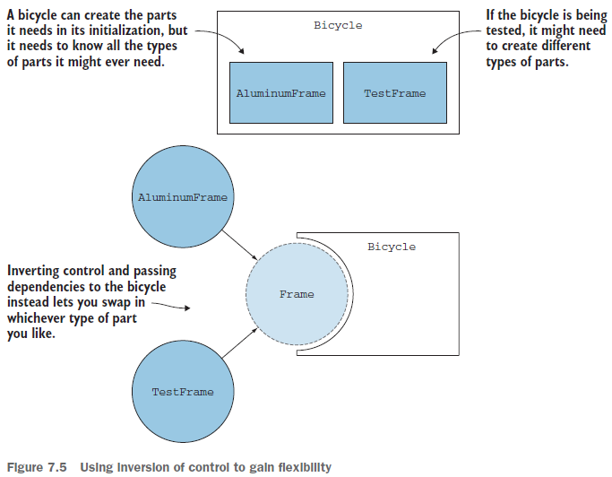
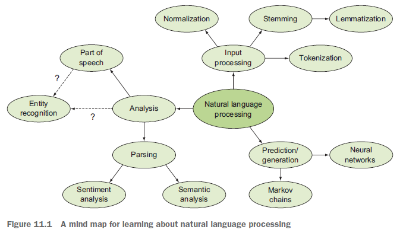

🔙 Back 📂 Directory list 🔝 Up one level
Users assess these features:
A developer should focus on:
Refactoring code is the process of updating it so it's better designed and reflects the latest best practices.
The steps in an e-commerce site may be separated into several services:
A framework is a large collection of libraries that act as a guide to some goal. It should provide building blocks that allow for flexibility and extensibility.
Examples:
The REPL (read-eval-print loop) is valuable for exploratory work.
Clear code should be separated into small, manageable pieces by concern.
A concern is a distinct behavior or piece of knowledge the software deals with.
A variable is a name that refers to a value, and they belong to namespaces. When loading the Python interpreter, the initial namespace is the built-in namespace.
Creating a Python module automatically creates an additional namespace for that module. For example, a file named sales_tax.py creates the sales_tax namespace.
A class is a template of closely related behaviors and data. Instances of classes are objects that have the behavior and data defined in the class.
The state (attributes) of the object is the data, and its behaviors are called methods. They are special functions that receive the object instance as an implicit argument (by convention, named self). Together, the attributes and methods are members of a class.
A class' constructor is a special method that creates an instance. In Python, __init__ is used.
Instead of passing data around as arguments to functions, one can store these values in attributes:
def __init__(self):
self.computer_choice = None
self.human_choice = None
def get_computer_choice(self):
self.computer_choice = random.choice(OPTIONS)
def print_choices(self):
print("Your choice and the computer's are:", self.human_choice, self.computer_choice)
When a class' methods and attributes are closely related, it's said to have high cohesion.
Loose coupling between components (little interdependence) is preferred because making changes to one should not affect the other at all (or very little).
Packages add further structure by grouping together related modules. In Python, a package is nothing more than a directory that contains modules.
An __init__.py file should be placed in a directory for it to be considered a package. Although there's namespace package behavior that works without __init__.py, many tools won't work without it.
Abstraction is the process of taking something concrete and stripping it of specifics.
Writing and reading code in large systems is like peeling an onion.
An e-commerce system may be broken down into:
Encapsulation groups together related functions and data into a larger construct. This construct acts as a barrier or capsule to the outside world.
Most often, encapsulation in Python is done with a class. However, modules are also a form of encapsulation.
The largest encapsulation available in Python is a package.
In a stricter language, classes can have public and private methods. Public methods and attributes act as the class' interface, which is how other classes interact with it.
Python does not implement public and private access. Instead, by convention, names starting with an underscore (_) are to be taken as private.
However, day and part_of_day can be extracted out of the Greeter class because they are independent of whatever store they happened to be called from.
Once these two functions are made independent, they may easily be used by other modules as well.
Polymorphism is a language feature where objects of different types provide specialized behavior via a consistent method name.
In the beginning, systems were often modeled as cascades of inherited classes. A major downside of this approach is that code became rigid and hard to update. Making one change could lead to a massive ripple of changes all the way up or down the tree.
Recently, the preference has shifted to composing behaviors into an object.
Instead of building an inheritance tree of Mammal > Quadruped > Canine > Dog, it is possible to assign traits to the Dog class. For example, it is a Quadruped, but not a Biped.
Composition is done through a language feature called an interface. They are formal definitions of methods and data that a class must implement.
Python lacks interfaces, but allows multiple inheritance. In this context, an "interface" would often be called a mixin. For example, a Dog may inherit a RollOverMixin.
If the interface to a third-party package causes friction, an adapter may be written as an abstraction around that interface
Software that performs at an acceptable level (uses resources efficiently and responds within a desirable time frame) is said to be performant.
Software has time complexity and space complexity.
Big O notation signifies the worst-case performance of a given piece of code.
Generators are constructs that produce a single value at a time, pausing until the next value is requested. In this way, it avoids storing all values it produces in memory all at once.
from timeit import timeit
setup = 'from datetime import datetime'
statement = 'datetime.now()'
result = timeit(setup=setup, stmt=statement)
print(f"Took an average of {result} ms")
Use the cProfile or profile module:
python -m cProfile --sort cumtime cpu_profiling.py.txt
Testing that some code produces the right output for a given input is functional testing because it makes sure that the code functions correctly.
Examples:
[1, 2, 3, 4], the expected output of calculate_mean is 2.5. Verify that the actual output matches this expectation.53-DE-232 and click on Add to cart, I expect to see it in my cart.Manual testing is the practice of running your application, giving it some inputs, and checking whether it does what you expect. You might miss something if you rely too much on manual testing.
Acceptance testing verifies the high-level requirements of a system. Software that passes these tests is acceptable.
End-to-end testing makes sure a set of actions can be carried out (from one end to the other) with the appropriate data flowing through where needed.
Cucumber.io is a library that enables you to describe end-to-end tests in natural language.
BDD (Behavior-Driven Development) allows you to collaborate with others on end-to-end testing.
Unit tests make sure all the little bits of your software are working. A unit of code is the smallest piece that can be isolated for testing. However, classes may be treated as units, even though they contain pieces that could have been isolated.
Consider all kinds of use cases when writing tests, including empty and invalid input, to ensure the code handles all of them gracefully.
Integration testing focuses on making sure a number of units all work in tandem to produce the right behavior.
End-to-end workflow tests are usually framed from the point of view of a user, while integration tests focus more on the behavior of the code. They're at different levels of abstraction.

A regression is a change in behavior you tested caused by a change in the code. It's a shift to an undesirable or unexpected state and is usually a bad thing.
Regression testing is the practice of running your existing suite of tests after each code change.
Test suites (collection of tests) may be run in a continuous integration (CI) environment.
Assertions are statements of fact. For example, if the sky is clear, you can see the sun every morning.
assert 1.0 == calculate_mean([100, 200, 3500]) # raises an AssertionError
unittest is Python's built-in testing framework. It can be used to group many tests for a class, or many tests for a single method. It may also be used for integration testing.
Running python -m unittest will cause the test runner to:
test_* or *_testunittest.TestCasetest_There's no right way to organize the tests. Some people put tests as close to the relevant code as possible, while others use a separate tests/ directory.
The following class will be used for practicing how to write tests:
This class represents a product for purchase in an e-commerce system. Below is a unittest for it:
The test is run in the console with python -m unittest
Code often interacts with other systems, such as databases and APIs. Since the code can do destructive operations, tests should not affect the real thing.
Test doubles replace the real thing:
Consider this code that requests tax information:
A unit test with mocking could look like:
pytest also discovers tests automatically. However, test classes must be named Test* and don't need to inherit from a base class.
Instead of assertEqual(expected, actual), pytest uses assert expected == actual
Run pytest in the console with pytest
Load testing is a type of performance testing, to see how far your application can be pushed until it falls over or no longer performs acceptably. Load testing falls somewhere above integration testing in the testing pyramid.
If you find testing some aspect of a function's behavior is awkward or difficult, try to determine if it's because the code's concerns aren't well separated or if it's inherently awkward to test.
Don't refactor code to make testing easier or coverage stronger. Do it to make testing easier and code more coherent.
Files for this project are in the bark directory (click here).
Using the command pattern, the logic of each action is encapsulated and triggered via an execute method, thus decoupling the actions from the presentation layer.
Code is extensible if adding new behaviors to it has little or no impact on existing behaviors. Plugin systems are implementations of extensibility.
Duplicating some code and updating the new copy is perfectly valid. By seeing how the new version differs, it is easier to refactor back into a single, multipurpose version later. Deduplicating code without a thorough understanding of all the ways it's being used might make the code inflexible to future changes.
Composition provides benefits over inheritance by allowing objects to reuse behaviors without confining them to a particular inheritance hierarchy.
Consider this code:
class Tire:
pass
class Frame:
pass
class Bicycle:
def __init__(self):
self.front_tire = Tire()
self.back_tire = Tire()
self.frame = Frame()
It is well encapsulated and abstracted, and adding new parts is straightforward. However, changing or upgrading the parts dynamically is hard because the structure is hardcoded into the initialization.
Bicycle depends on Tire and Frame. For example, using a CarbonFiberFrame will require changing the constructor.
Inversion of control says that instead of creating instances of dependencies in the class, you pass in existing instances for the class to make use of.
Control of dependency creation is inverted by giving the control to whatever code is creating the Bicycle.

class Tire:
pass
class Frame:
pass
class Bicycle:
def __init__(self, front_tire, back_tire, frame_type):
self.front_tire = front_tire
self.back_tire = back_tire
self.frame = frame
if __name__ == '__main__':
bike = Bicycle(Tire(), Tire(), Frame())
# ride bike
By sharing agreed-upon interfaces between high- and low-level code will give you the freedom to swap implementations in and out.
The robustness principle, also known as Postel's Law, says to "be conservative in what you do, and be liberal in what you accept from others."
For example, map a large range of input into a smaller range to direct the flow of information toward a more limited, expected range.
Object-oriented programming is all about the separation, encapsulation, and classification of information and behaviors.
Parent and child classes will be called superclasses and subclasses in this book.
Inheritance is for specialization of behavior. Subclasses should be treated as special cases of their superclass.
| B inherits from A | B is-a A |
| C uses an instance of D | C has-a D |
The Liskov substitution principle states that in a program, any instance of a class must be replaceable by an instance of one of its subclasses without affecting the correctness of the program (the program remains error-free and achieves the same basic outcomes).
If a subclass' constructor requires a new argument, substitutability is violated. For example, a Snail class that inherits from Slug whose constructor requires the size of the shell.
One way around this is to use composition: a Snail has-a Shell.
If a subclass changes any method signatures or raises an exception as part of its specialization, it may not fulfill the role of the superclass.
Sandi Metz, a Ruby programmer who came from the Smalltalk community, laid out these rules for when to use inheritance:
A shallow hierarchy means that it is not deeply nested. A narrow hierarchy means that a superclass does not have too many subclasses.
A Bird class is a good example of a class that should use composition for flying, because some birds like penguins can't fly. Code that expects all Birds to fly won't work.
Python has the built-in type() function to tell which class a given object is an instance of. isinstance() is a predicate that checks if an object is an instance of a given class.
>>> type(42) <class 'int'> >>> isinstance(42, int) True
issubclass(FancyTire, Tire) is True. Note that a class is a subclass of itself, so passing the same class will return True.
The super() function forwards any method or attribute access to the superclass.
class CorruptTeller(Teller):
def deposit(self, amount, account):
super().deposit(amount * 0.99, account)
The method resolution order determines the list of classes Python will search for the desired method. The steps are:
A class has an __mro__ attribute that returns its MRO. For example, Tiger.__mro__
With abstract base classes, you will use something that looks like inheritance but achieves something that's effectively an interface.
An abstract base class outlines which methods and attributes its subclasses must implement.
The abc module has the ABC class. You can inherit from the ABC class to indicate that your class is an abstract base class.
Abstract methods should be marked with the @abstractmethod decorator.
from abc import ABC, abstractmethod
class Predator(ABC):
@abstractmethod
def eat(self, prey):
pass
class Bear(Predator):
def eat(self, prey):
print(f'Maul {prey}')
Code complexity is a quantitative measurement of the characteristics of your code, not just a subjective measure of how confusing it may be.
A common measure of code complexity is cyclomatic complexity. It involves determining the number of execution paths through a function or method (conditionals and loops).
Counting the nodes and edges of a graph of the control flow (the execution path) of a function will give you its cyclomatic complexity.
Nodes in the control flow graph are:
if/elif/else conditionsfor/while loopsreturn statementsThe formula for cyclomatic complexity, M, is:
M = E - N + 2
where E is the number of edges and N is the number of nodes.
Complexity should ideally be 10 or less.
Tools such as SonarQube and Radon do the work of measuring complexity for you.
Replace if/elif/else branches with a dict that map values to the needed values.
Use functions to manipulate the raw value of food.
Getting the right formatting function can be extracted into its own function:
Getters and setters are generally discouraged in Python because the can clutter up a class.
The @property decorator can be used in Python to signify that a method on a class should be accessible as an attribute. Note: Methods can be used as properties only if self is their only argument, because when you access the attribute, you can't pass any arguments to it.
Forwarding is to continue providing previously existing functionality while a new implementation is being built.
Supposing we want several formatting options for the author of a book, an Author class may be extracted to contain these methods.
When planning to remove code, warn the clients:
import warnings
warnings.warn('Do not use this anymore!', DeprecationWarning)
Coupling can be thought of as the connective tissue between different areas of your code. Alternatively, a kind of mesh that runs throughout your code.
Tight coupling is not inherently bad.
Coupling between two pieces of code is tight when they are interconnected. Interconnections include:
When an entity needs to carry a lot of knowledge from another entity, they're tightly coupled.
Loose coupling is the ability of two pieces of code to interact to accomplish a task without either relying heavily on the details of the other. They often implement and use interfaces.
Intercommunication between pieces of code is done with messages (questions you ask of an object or the things you tell it to do).
Three forms of coupling are described below:
Code has Feature envy when it performs several tasks using mainly features from another area. For example, a main procedure that wants to be the search module because it uses all its features explicitly.
One way to remove feature envy is to roll up multiple functionalities into a single entry point.
Shotgun surgery.is having to make changes far and wide after making a single change in order to keep code working. To minimize this unwanted work, separate concerns better and practice good encapsulation and abstraction.
A leaky abstraction is one that doesn't sufficiently hide its details. It ultimately asks the client to have some knowledge of what lies beneath it.
An example of a leaky abstraction is the requests package exposing the HTTP error code when something goes wrong. It is useful for error handling, so it's a tradeoff between completely abstracting an error scenario and handing some control back to the calling code.
A mind map is a visual, hierarchical structure that starts from a central node (an overall concept) and branches out to subtopics or related topics.
